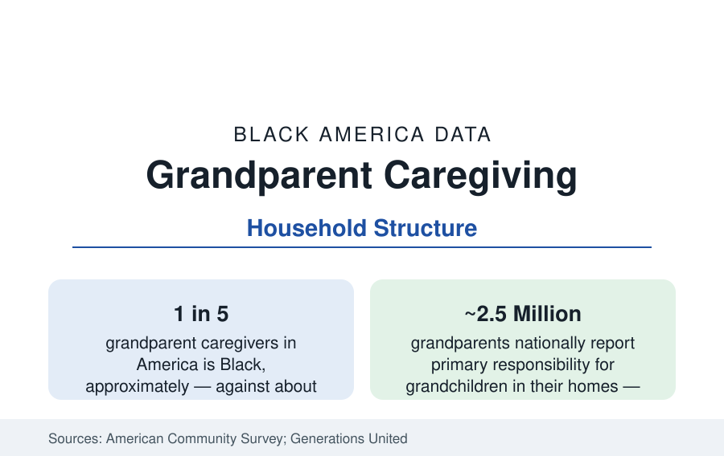

Black Census
Black Grandparents and Kinship Care: The Multigenerational Safety Net in the Data
Black grandparents form about a fifth of America's grandparent caregivers from an eighth of the population — the kinship layer of the household data.

About one in five of the grandparents raising grandchildren in the United States is Black — against roughly one in eight of the older population — and Black children live in grandparent-headed and multigenerational households at rates well above the national pattern in the American Community Survey. Kinship care is the household data's oldest Black institution: the grandmother-headed household is a demographic form with its own economics, its own health data, and its own policy file. This article reports it.
The Counts and Their Shape
The ACS grandparent module counts roughly 7 million grandparents living with grandchildren nationally, of whom about 2.5 million report primary responsibility for their care; Black grandparents form a share of the responsible-caregiver population in the range of a fifth — in a population where they are an eighth of seniors. The arrangements layer: coresident grandparents who share care with a present parent (the multigenerational household of the household profile), 'skipped-generation' households where no parent is present (the kinship-care core, in the hundreds of thousands of Black households), and the formal foster system's kinship placements, where federal law now prefers relatives and Black children are placed with kin at the system's highest rates. The geography follows the child population's: the South holds the largest counts, the Delta and Black Belt the highest rates, the great metros the largest urban concentrations.
The Economics of the Grandmother Household
The financial data describe a care system running on retirement income. Grandparent caregivers record incomes below their non-caregiving peers in the survey data (caregiving grandparents are younger on average but poorer, the composition reflecting the circumstances that produce kinship care), and skipped-generation households rely disproportionately on Social Security — the senior profile's income data doing double duty as child support — supplemented by TANF child-only grants (whose uptake among eligible kin caregivers the policy literature finds low, an information-and-friction gap), the earned income and child tax credits (whose kinship eligibility rules have widened), and in-kind kin networks. Housing follows: multigenerational crowding in the high-cost metros, grandparent-owned homes anchoring the family's stability in the lower-cost South — the homeownership data's least-noticed function.
Health: The Caregiver Data
The health data of caregiving grandparents are the public health section's quiet file. Caregiving grandparents report worse self-rated health and higher rates of chronic conditions than non-caregiving grandparents of the same age in the survey literature — a relationship the research reads in both directions (poorer adults are likelier to become caregivers; caregiving's strain compounds) — and the skipped-generation caregivers record the profile's most difficult figures: depression symptoms elevated, preventive care deferred, the caregiver's own hypertension and diabetes management competing with the grandchildren's needs in the household's budget of money and attention. The counterweight data also exist: coresidence is associated in several studies with the grandmother's cognitive and social engagement, and the children's outcomes in stable kinship care compare favorably with non-kin foster care in the placement literature — the system's evidence for preferring grandmothers, running on grandmothers' health.
Policy: The Kinship Framework
The policy data have moved toward the institution the data describe. Federal law (the Family First Prevention Services Act's framework, the kinship navigator programs, subsidized guardianship options in most states) increasingly funds what Black families have always done informally; the remaining gaps in the program data are the informal majority — most kinship care happens outside any system, ineligible for foster payments and unevenly reached by the navigator and respite programs. The demographic trajectory guarantees the file's growth: the baby-boom generation is now the grandparent generation, Black life expectancy rises slowly, and the children's population of the companion profile guarantees the demand.
Reading the Kinship Data
The cultural record matches the demography: the Black grandmother is a figure of documented standing in the community's own institutions — the church mothers of the congregation data, the neighborhood anchors of the city profiles' blocks, the voters and caregivers whose turnout of effort the survey researchers interview by name. The data give that standing its arithmetic.
The grandparent data complete the household section's argument: Black America's family economics cannot be read from the nuclear household alone. A fifth of the nation's grandparent caregivers, raising children on retirement incomes inside the homeownership and Social Security data, are a load-bearing institution — measured here, as everywhere in this reference, in the same tables as everything else, and deserving the same precision.
More in Black Census
The Black Population of the United States: Size, Definitions, and Distribution
The Black population of the United States totals 52.8 million — 15.4 percent of the nation. How the Census Bureau defines and counts the population, and where it lives.
Black Median Household Income in the United States
Black median household income stands at $56,490 in the Census Bureau's annual income report — how the figure is measured, how it compares, and what drives it.
The Black Poverty Rate: Levels, Children, and the Long Trend
The official Black poverty rate is 17.1 percent — against 11.1 percent nationally and 7.7 percent for non-Hispanic White Americans. How poverty is measured and what the data show.
Source: U.S. Census Bureau, American Community Survey grandparent and household data; Administration for Community Living; Generations United kinship care research.